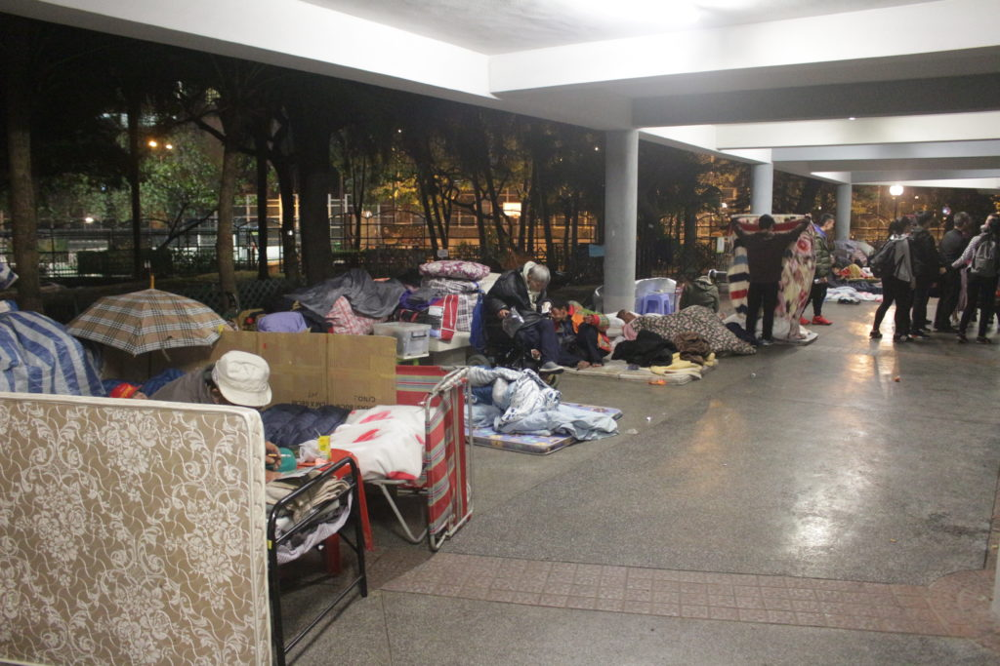
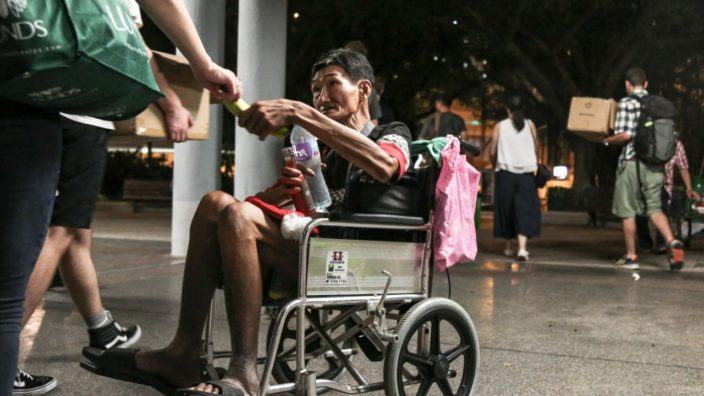

How to help homeless people
by Ehtan Kuo, Akita Kensuke, Rakeen Zi
Why are there homeless people?
There are 1127 homeless people in Hong Kong according to government research in 2017,
even more according to other independent studies.
Homeless people mean people who don’t have a house to go to.
There are homeless people in Hong Kong mostly because they can’t afford to rent a house.e
It is caused by the unfairness of society, the houses are getting much more expensive since the rich people are speculating houses,
therefore it becomes much more difficult for people to afford renting or buying a house.
It is also more common for the elderly or people with physical or mental disability since it is hard for them to find a job with steady income.

What are the difficulties that they are facing?
The difficulties homeless people are facing include having terrible living conditions,
they can only take showers in public toilets and sleep on the streets where mice pass by,
they also have no access to electricity or the internet.
But the worst problem they need to face is discrimination from the others,
nowaday if you are unable to live in a proper house in Hong Kong you will be considered as ‘loser’
which makes the homeless feel terrible and lose faith in life.
Why should we help the homeless?
Everyone in society needs help. For example, when someone is sad,
they need someone to talk to when someone is out of money,
they might need to borrow money from their friends or family.
If we help people who are in need, we will make their day less miserable.
By doing so, we are making a contribution to society.
Eventually, we will need help, so why don’t we help others?

How do we help the homeless?
There are multiple options to help the homeless. For those who have spare money,
you could donate your money to a charity so they could use it to buy food or supplies.
For those who have spare time, you could go visit them with the help of charity or yourself,
you could talk to them or help distribute supplies. For those who don't have either time or money,
You could help encourage people around you to help the homeless. Here are some links to some charities:
Christian Concern for the Homeless Association
it provide information of homeless in Hong Kong, a way to become a volunteer and donating
Impact HK
It provide some experience from helping the homeless and a way to donate.
